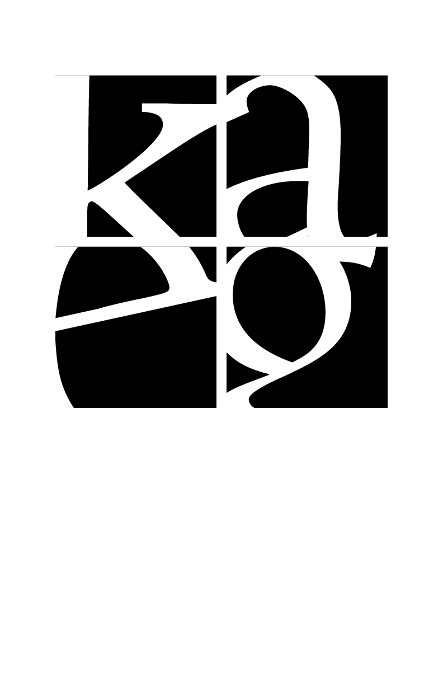
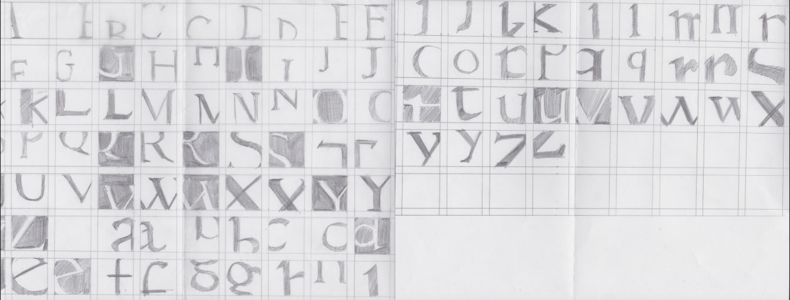
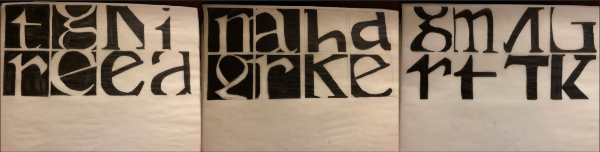
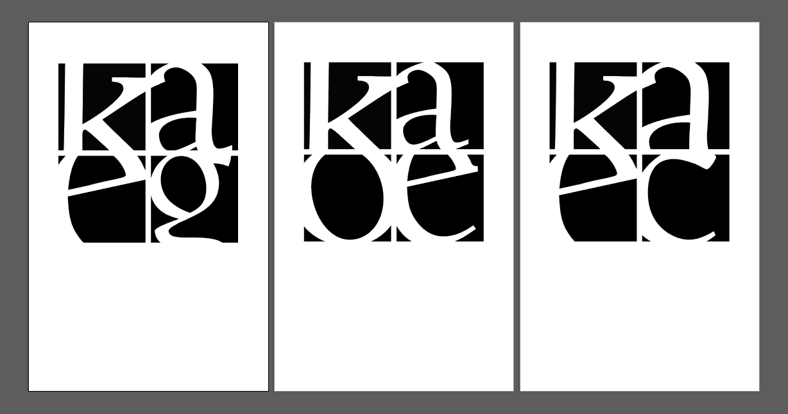
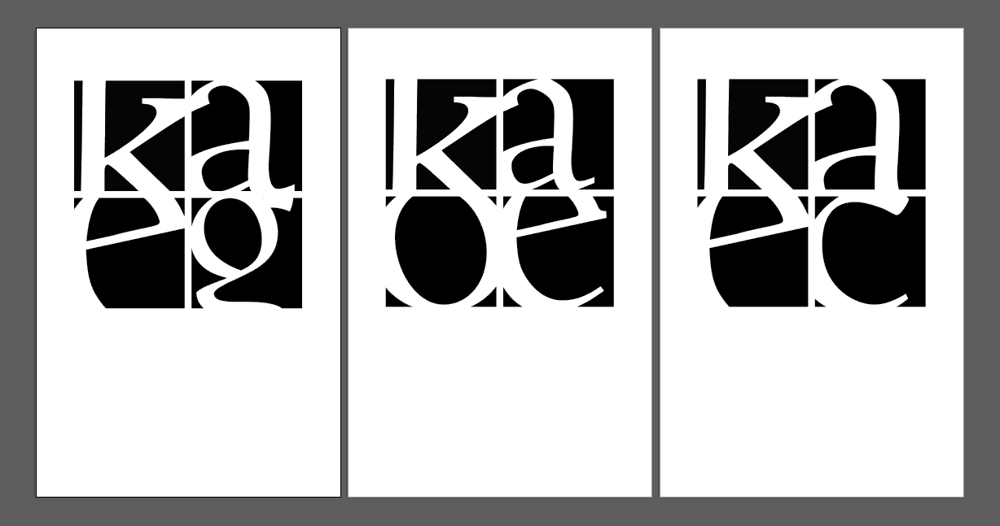

Minimal Letterforms
Through close examination of the form and function of letterforms, We were asked to investigate the unique visual characteristics of a specific typeface and the aspects of composition — including juxtaposition, contrast, form/counterform, symmetry, rhythm, implied connection, and balance. The goal is to create strong visual and thematic relations by focusing on the negative and positive space within each letter. The constraints included using a series of 4 individual cropped letterforms and arranging them into a composition within the prescribed 2 x 2 grid to explore the principles of gestalt. 
Process and Drafts
  
